The company was opening its own clinics for the first time. Besides booking, I had to design what happens before, during and after the patient's time in the clinic.
2 months · 2 clinics · Lead Product Designer
The short version
The company opened its own clinics. I designed the patient's whole visit across the app and an in-clinic kiosk: booking, check-in, queues, tests, pharmacy, reports and follow-up. Live in two months.
My role
Lead Product Designer Guided 1 junior designer. Worked with 2 PMs, 4 developers, 1 backend engineer and clinic ops.
45% of clinic orders via the app 48% of clinic revenue via the app ~100 app bookings in one day
One-day snapshot of 73 orders.
01 The brief
What changed for the company
The company used to send patients to partner hospitals and labs. Now it was opening its own clinics, so it would run the whole visit itself.
We had two months to turn the idea into a real product.
Before
Mobile appPartner ecosystem
The company hands the patient over to a partner, and the visit happens there.
After
Mobile appDigital ClinicPatientDiagnosticsPharmacy
The company runs the whole visit, so the app has to support all of it.
Most of the visit happens after booking.
Mobile appLIVE
Arriving
Leave in 30 minutes to arrive on time
Book
Arrive
Check in
Wait
Vitals
Doctor
Pathology
Radiology
Pharmacy
Go home
A clinic visit involves many people, rooms, queues, services and rules. The patient shouldn't have to understand how all of that works. The app should handle it and tell them where to go next.
The patient sees one visit. The clinic runs many steps behind it.
Where clinic visits usually go wrong
Before designing anything, I listed where a typical clinic visit breaks down for the patient, stage by stage.
Based on the company's existing patient journeys, clinic operations and the problems the Digital Clinic was meant to fix. These are known pain points, not results from a formal study.
Booking
Real availability is unclear. You book, then wait for someone to call you back.
Patients lose track of where they are, what's next and how long it will take, because a clinic visit runs on a physical system they can't see.
The goalMake every step of the visit clear and predictable for every patient, without slowing the clinic down.
Constraints
Three kinds of patientsWalk-ins, policyholders and corporate members arrive at the same door, with different payment and coverage.
A physical operationRooms, staff and several queues per visit. The app had to mirror how the clinic actually runs.
Not everyone uses appsPatients arrive unwell, and some can't or won't use the app. The visit had to work without it.
Partners to protectThe app already lists partner hospitals and labs. The clinics had to stand out without pushing them aside.
Two months, changing requirementsRequirements were still changing, backend limits were real, and there was no clinic-specific data yet.
A brand-new product, with no data yet
The Digital Clinic was new, so there was no clinic-specific data on patient behaviour to design from. With two months to launch, we worked in this order:
A clear product hypothesis
Fast design
Feedback from clinic ops
Launch
Learn from real use
The aim was a first version good enough to launch, and set up so we could learn from it.
We knew
The app's existing design patterns
Clinic business goals
Basic operational requirements
Known healthcare journey patterns
Common patterns in competitor apps
We had to learn
How patients would actually behave inside our clinic
Where patients would still need staff help
Whether a live queue in the app would reduce uncertainty
Which features patients would actually use
What would change after launch
Patients arrive three ways, then follow the same visit.
Walk-in
Needs a fast way into care.
OPD / covered
Needs coverage-aware booking and payment.
Self-pay
Needs a simple, direct experience.
One visit
Check in → queue → vitals → doctor → tests → pharmacy → follow-up
They start differently, but once inside the clinic most of the steps are the same. So we designed one visit for everyone instead of three separate products.
Entry points
Patients find the clinic inside an app they already use
The app already listed a large network of partner hospitals, doctors and labs. The new clinic had to show up first without removing those choices.
01 · Inside existing booking
Shown first in search, next to partners
Doctor search: the Digital Clinic leads the featured centres with a "New" tag, and a "Skip the wait!" card highlights its doctors.
Lab partners: the clinic sits on top with same-day home collection.
Partners follow: same card, same price layout, same booking flow.
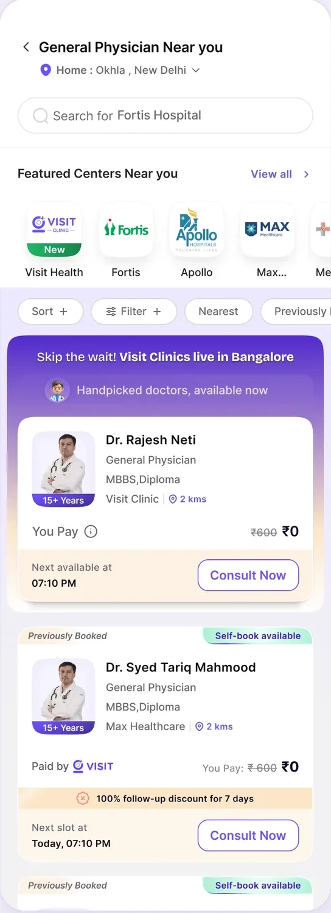
Doctor search. Clinic first, partners below.
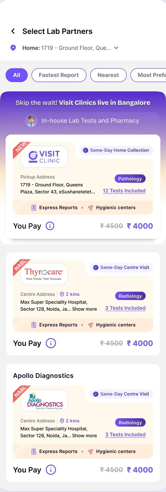
Lab partners. Same card, same flow.
02 · Its own front door
A clinic card on Home, with its own landing page
Home: a "Newly launched" clinic card inside the main app.
Clinic landing page: services, "Save up to 20%", and why the clinic.
Booking: real slots by time of day, with a free follow-up for 7 days.
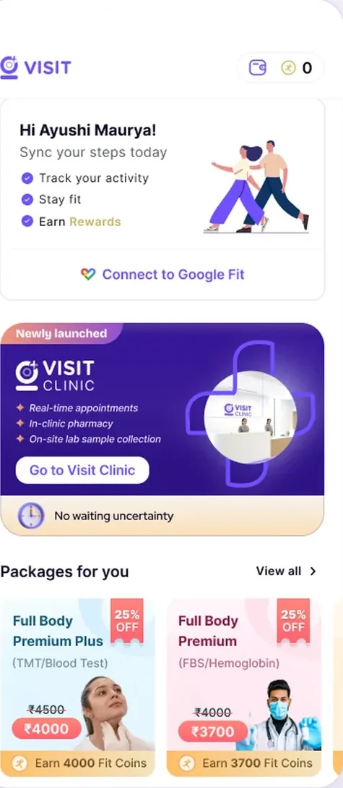
Home. "Newly launched" card.
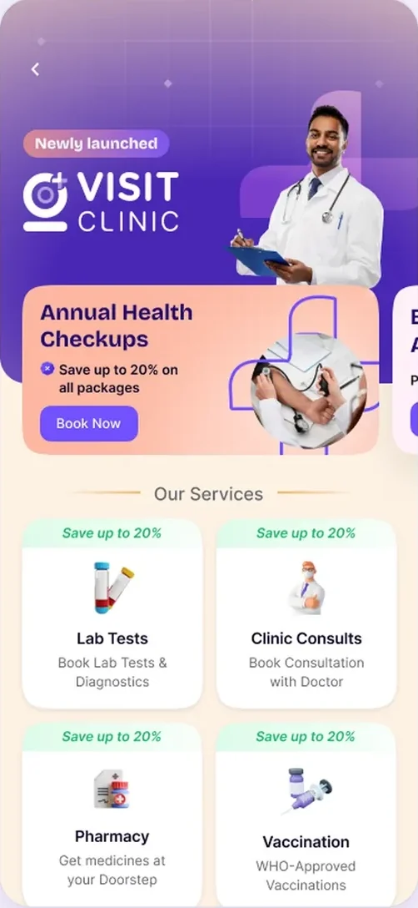
Clinic landing. Services + offers.
Design decision
Top spot in search, partners still listed
Partners are core to the business. So the clinic gets attention through its position and a clear offer, and every partner stays visible and bookable. The patient still chooses.
Clinic first, partners kept. The clinic is shown first. Partners are never removed.
Same card for everyone. Same design, cashless badge and Book button, so the comparison is fair.
Promote what's different. Only the clinic offers "Skip the wait" and "Save up to 20%".
Doctor search · General physician
VCDigital ClinicNew · Skip the wait · 2 kmBook
FFortisPartner · cashlessBook
AApolloPartner · cashlessBook
MMax HealthcarePartner · cashlessBook
Illustrative. Partner names as shown in the app's featured centres.
Options
Show only the clinic
Mix it in, no emphasis
Lead with it, keep partners bookable
Chose
Lead with the clinic, keep partners bookable
Trade-off
Some patients will still pick a partner. That's fine. It keeps the partner network healthy, and the clinic has to earn its bookings.
02 Key decisions
Three key decisions in two months.
Decision 01
App check-in, only near the clinic
Hypothesis
The idea
Patients join the queue from home and arrive just in time, so they spend less time in the waiting room.
Fact
What the clinic needed
Clinic operations needed to know that people in the queue were actually nearby. A patient who joins from home and doesn't show up holds up everyone already waiting.
Decision
The change
App check-in only works within 100 m of the clinic, for example from the parking lot or the café next door. Anyone can still check in at the kiosk or front desk.
Shipped
Check-in within 100 m
Patients are close enough for the queue to be reliable, and can still skip the desk.
The idea: anyone can join the queue from anywhere. The clinic can't tell who is really on the way.
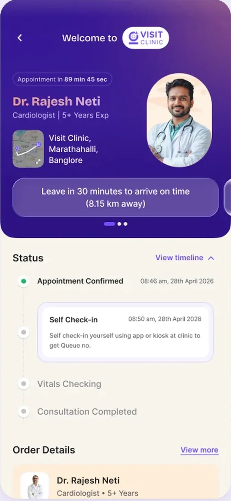
Before arrival. A nudge to leave, then check-in once nearby.
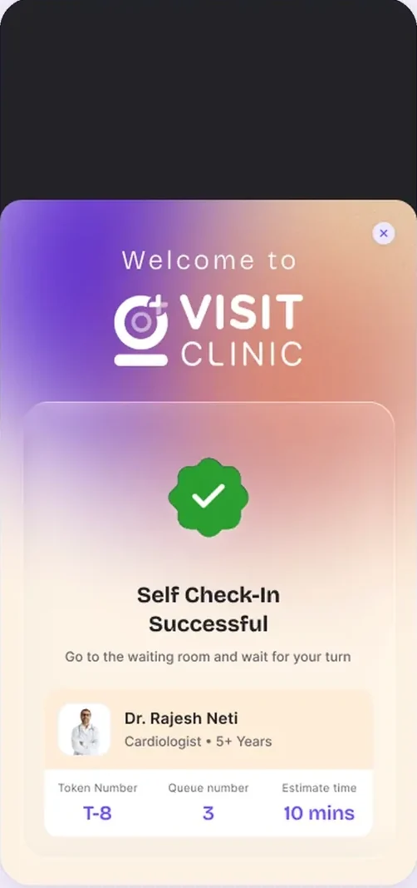
Checked in. Token, queue position and wait time, shown once the patient checks in nearby.
Options
Check in from home
Front desk only
App check-in once nearby
Chose
App check-in within 100 m, with the kiosk and front desk as other ways in
Trade-off
Patients can't join the queue before they leave home.
Patients lost a little convenience, but the clinic got a queue it could trust.
Decision 02
One visit, with many queues underneath
One visit can include the doctor, pathology, radiology, ultrasound and the pharmacy. If each were a separate booking, the patient would have to work out what to do next five times.
Your visit · Token T-8
ConsultationRoom 4
Blood sampleRoom 1 · 3 ahead
Chest X-rayRoom 8
UltrasoundRoom 8
PharmacyCounter
Next: go to blood sample collection room 1
One visit. The patient sees one list and one next step.
Doctor · Room 4
T-11T-12
Pathology · Room 1
T-3T-5T-6
Radiology · X-ray
T-2
Ultrasound · Room 8
T-4T-7
Pharmacy · Counter
T-1
T-8
Many queues. When a step is done, T-8 moves to the next queue. Tokens are illustrative.
Options
A separate booking per service
One visit, with queues underneath
Chose
One visit
Trade-off
The product has to hand the patient from queue to queue at every step.
One visit for the patient. Many queues for the clinic.
Prototype: three tests in one visit
The doctor prescribes three tests, so the patient joins three queues in one visit. After each test, the app sends them to the next room: blood sample, chest X-ray, then ultrasound. A WhatsApp update arrives as soon as the sample is collected, and the reports are added to the same visit.
The consult takes minutes. Lab results take hours or days. So each got its own timeline, and the prescription links them.
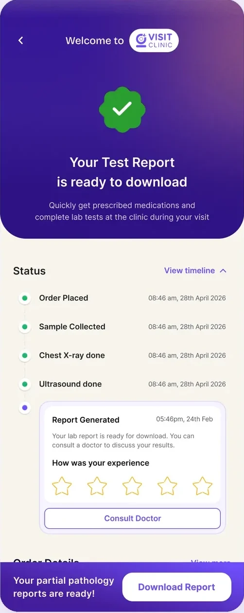
Hours later. The report arrives in the same visit.
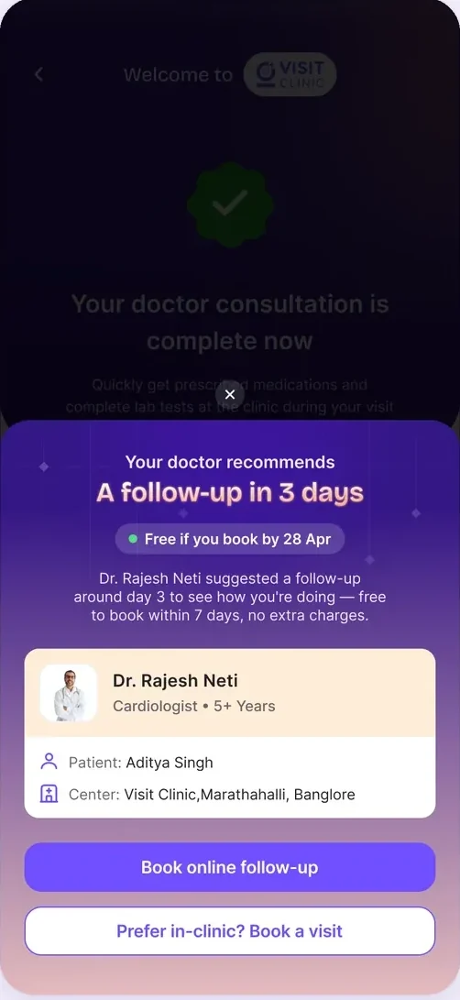
Days later. The doctor's follow-up, ready to book.
03 The full visit
The full visit, step by step
This prototype shows one full visit: booking a doctor, checking in, the live queue, the consult, the fasting check for lab tests, checkout, the sample queue and pharmacy pickup.
Below, you can scroll through it screen by screen. The tracker on the side shows where the patient is.
Prototype · 1:20Booking to pharmacy pickup, played at 1.5× speed.
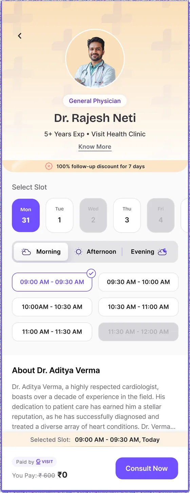
01 · Booked
Patient needs
A slot they can trust.
Product does
Real slots by day and time of day, the follow-up discount up front, and what they pay before they book.
02 · Arriving
Patient needs
To know when to leave.
Product does
"Leave in 30 minutes to arrive on time (2.5 km away)."
Shows: the visit starts before the patient reaches the clinic.
03 · Checked in
Patient needs
Proof they're in.
Product does
Token, queue number and estimated wait. From the app within 100 m, or at the kiosk or front desk.
Shows: patients get convenience, and the clinic keeps control of the queue.
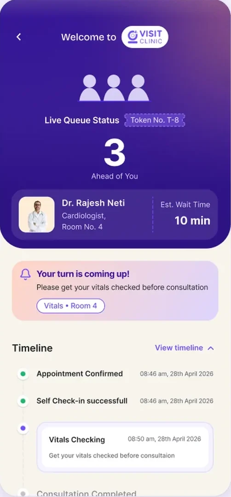
04 · Waiting
Patient needs
To stop asking the front desk.
Product does
People ahead, wait time, and "get your vitals checked" before the consult.
Shows: the app tells patients what to do next while they wait.
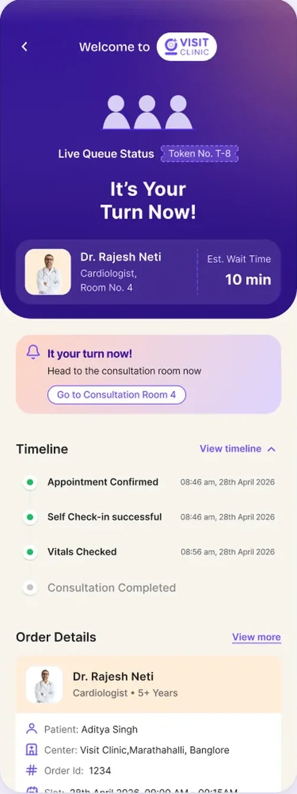
05 · Consult
Patient needs
To know exactly when to go in.
Product does
"It's your turn now!" with the room to go to.
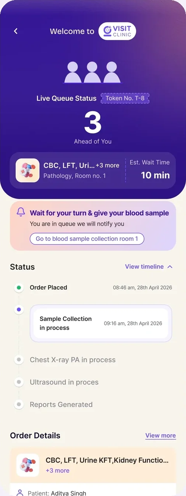
06 · Testing
Patient needs
The right room, at the right time.
Product does
A queue card per test, with its own timeline.
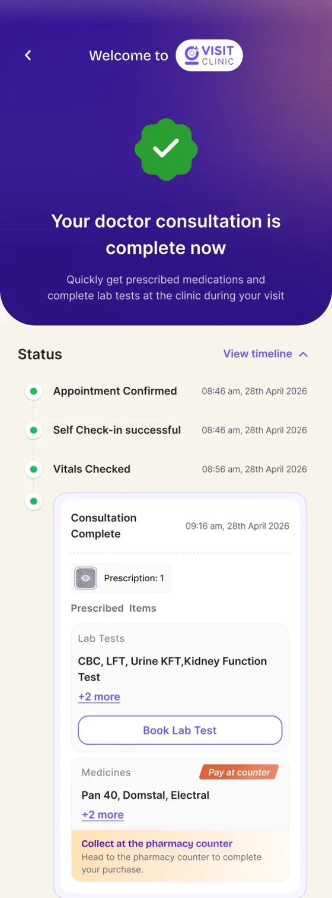
07 · Collecting
Patient needs
To know what the doctor ordered, and where to get it.
Product does
The prescription splits into lab tests to book and medicines to "Collect at the pharmacy counter", paid at the counter.
Shows: the consult connects to diagnostics and pharmacy.
08 · Report
Patient needs
Results without coming back.
Product does
Partial results early, the full report when it's ready.
Shows: the visit continues after the patient leaves the clinic.
09 · Follow-up
Patient needs
To remember the doctor's advice.
Product does
The recommended follow-up, free within 7 days, waiting on Home.
App steps and clinic spaces Each step in the app matches a place in the clinic.
Hover or tap a column to see how a digital moment maps to the physical clinic.
PatientDigital layerPhysical layer
One visit
04 Edge cases
Edge cases we designed for
Real world
The patient is outside the clinic.
Product response
App check-in won't work outside 100 m, and the app says why: "You may be outside the 100m clinic radius. Please try again." The front desk can still check them in.
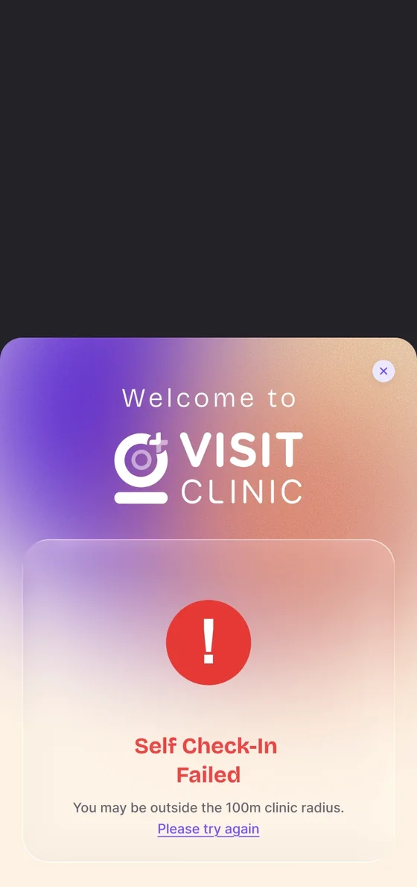
Real world
The patient hasn't fasted.
Product response
Fasting-required testHave you fasted?
YesBook now
NoLater slot + instructions
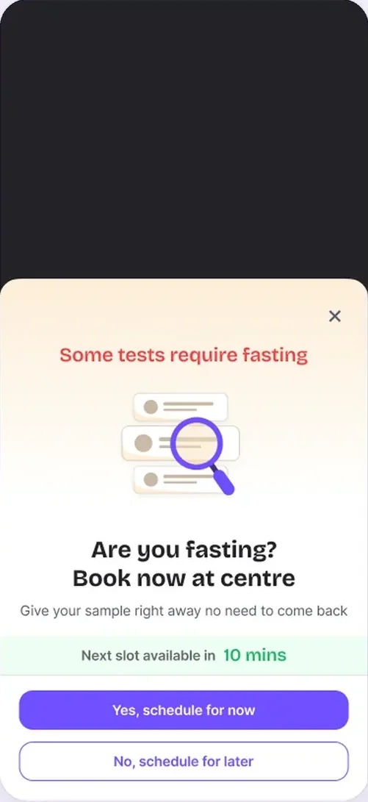
Real world
The prescribed test isn't available at this centre.
Product response
The patient sees what can happen today: "2 / 4 tests can be done today. MRI & X-Ray are unavailable." They book the available tests now, and checkout lists the unavailable ones separately.
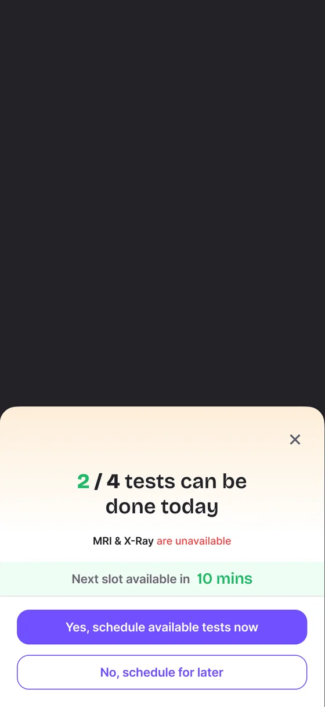
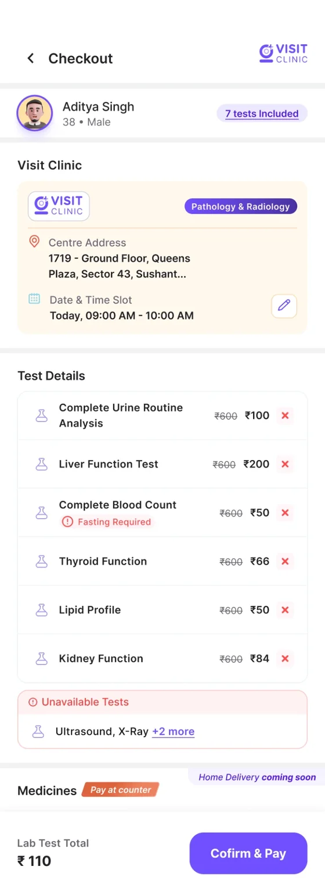
Real world
A co-pay is required.
Product response
Check inMake paymentVitalsConsult
"Please Complete Payment · Copay Payable ₹200" shows up as a step in the visit timeline, with Make Payment, before vitals. So the patient isn't surprised at the desk.
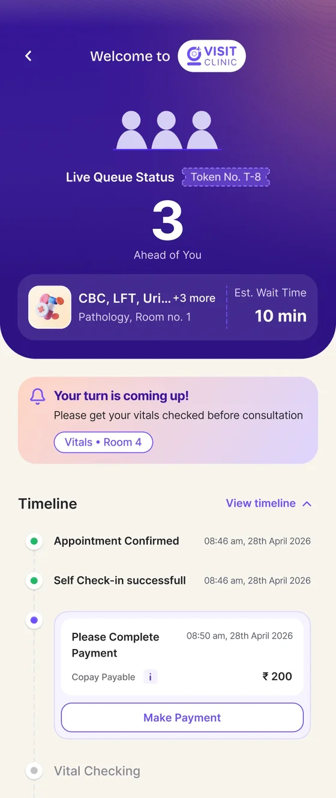
In each of these cases, the app had to handle what was really happening, beyond the ideal flow.
Patients don't need the app to check in
Patients can check in on the app, at the kiosk or at the front desk. The kiosk and desk are there for anyone who needs help getting started. After that, the app gives more detail for the rest of the visit.
Kiosk
or
Front desk
Clinic
App
Queue
Next action
Prescription
Diagnostics
Pharmacy
Reports
Follow-up
Kiosk shown as a schematic.
05 Business impact & growth
Fitting offers into the visit
The clinic gave the company a new way to sell services it already offered: annual health checks, the OPD Pass, diagnostics, pharmacy and follow-ups.
Offers should appear at the right step of the visit, without interrupting it.
Booking
Health check packages under "Recommended for you & your family", including dependents.
In the queue
The OPD Pass, covering consults, lab tests and pharmacy at the clinic, while the patient waits.
After the consult
Prescribed diagnostics and medicines, booked in a tap.
After the visit
A free follow-up within 7 days, and tests suggested from the patient's last report.
Where the offers show up
Home: discounted health check packages, plus "Add your dependents".
Clinic landing: annual health checkups and "Save up to 20%" on every service.
In the queue: a partner glucose-monitor offer and the OPD Pass.
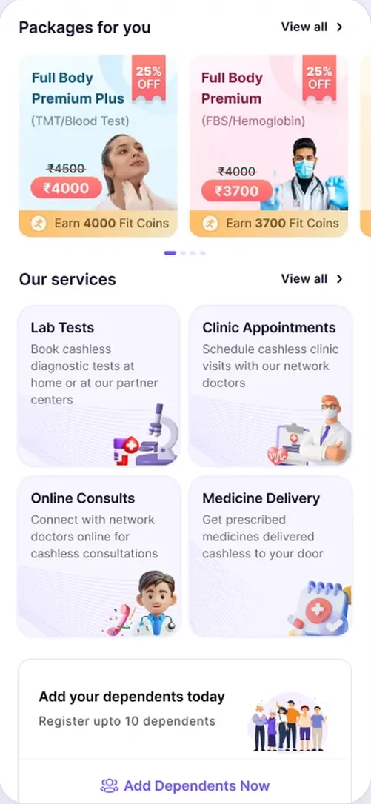
Home. Packages + dependents.
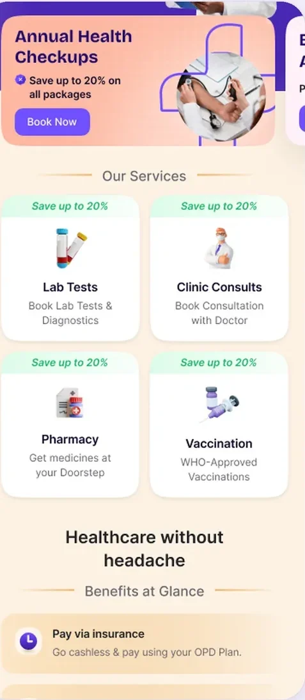
Clinic landing. Save up to 20%.
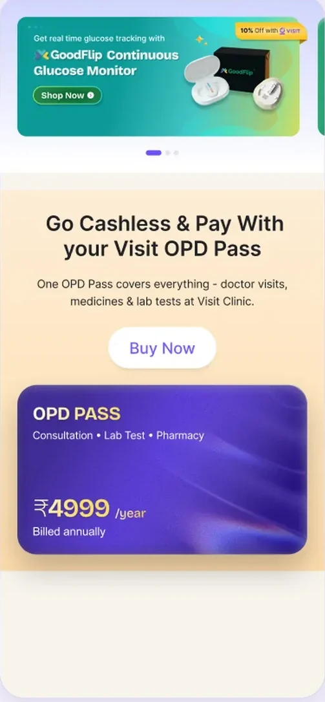
In the queue. The OPD Pass.
Selling the clinic on the package page
Inside the details: a "served with care" note, with zero wait time, reports in 4 hours and certified phlebotomists.
Know more: opens a short clinic story on the same page, with a video tour, how it works in four steps, and what people say.
Booking stays one tap away: the patient stays on the package they were looking at.
Prototype · 0:43The clinic story inside a full-body checkup package.
Care that continues after the visit
Most clinics lose touch with patients once they leave. The app keeps suggesting next steps based on the patient's own visit.
After the visitWhat the app suggests
Doctor asked to see you again
Free follow-up within 7 days, or a discounted one
Lab report is ready
Download notification + consult a doctor on results
A health risk shows up (e.g. diabetes)
Personalised suggestions, like glucose tracking
Prescription or health need
Medicines and supplements, in a few taps
Making follow-ups easy to book
After the consult: "Book Free Follow-up Consult" sits right in the order details.
Doctor's recommendation: "A follow-up in 3 days", free if booked within 7 days.
Back on Home: "Free Follow-up Available", where the patient already looks.
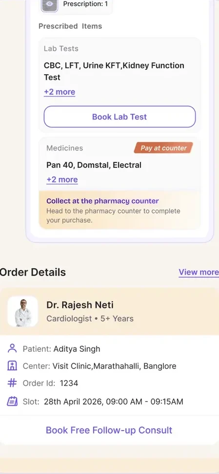
After the consult. Free follow-up.Doctor's advice. In 3 days.
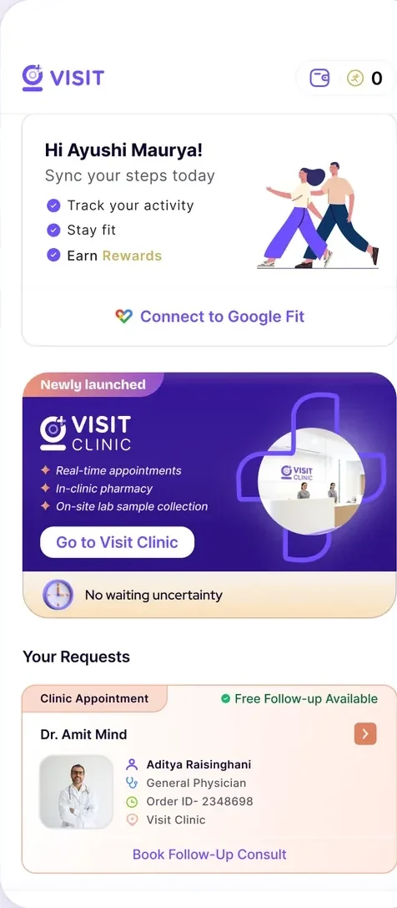
Back on Home. The reminder stays there.
Personalised reports
Smart report: highlights first, out-of-range values flagged against their range, and "Review it with Doctor."
For you and your family: tests suggested from the last report, with the at-risk values named and a repeat reminder.
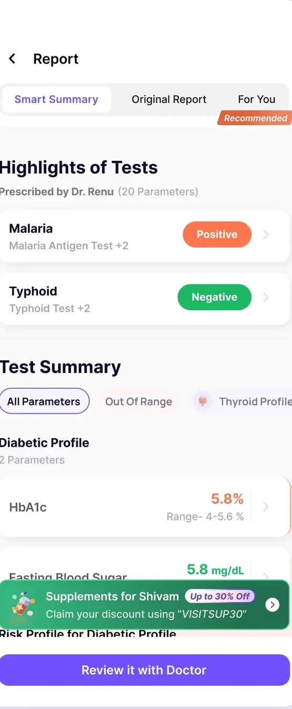
Smart report. Highlights first.
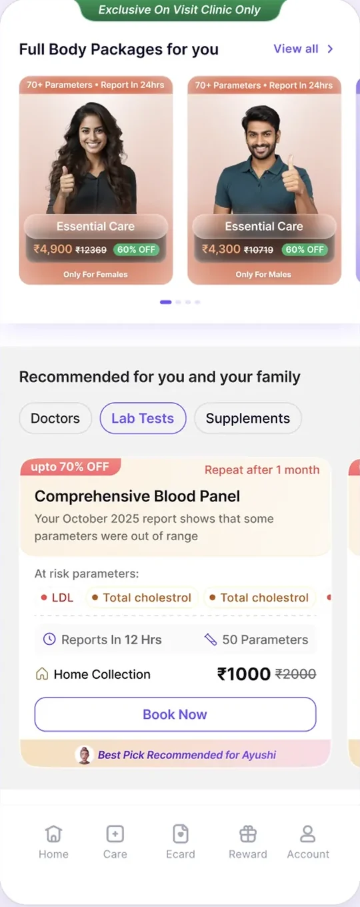
For you & family. From the last report.
06 Launch
Launch and early results
We went from an early concept to a live product in two months.
2clinics live in BengaluruFact
~100clinic bookings through the app in one dayFact
45%of clinic orders placed through the appSnapshot
48%of clinic revenue through the appSnapshot
Order and revenue shares are based on a one-day snapshot of 73 clinic orders. They're early signals, not a long-term impact study.
The early data supports linking consultation, diagnostics and pharmacy in one digital flow.
What I'd want to learn next
Version one is live. The next versions should be based on how patients and staff actually use it.
Next questionWhere do patients still ask the front desk for help?
Next questionDoes the live queue actually make waiting less uncertain?
Next questionWhich parts of the visit should we improve next?
What I took from this project
A physical service changes how you design a digital product.
Working with an operational limit, instead of against it, can lead to better UX.
You don't need to be certain to ship a new product. You need a solid hypothesis, good judgement and a way to learn quickly.
The most useful screens tell the patient what happens next.
The app had to follow the patient through the whole clinic visit.
I designed the Digital Clinic around four stages: before the patient arrives, while they wait, while they move between rooms, and after they go home. The screens are only one part of that.